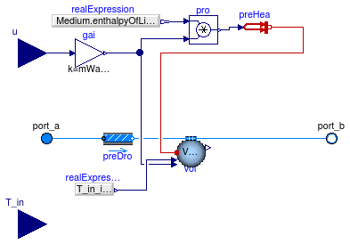

Extends from Modelica.Icons.VariantsPackage (Icon for package containing variants).
| Name | Description |
|---|---|
| ConstantEffectiveness | Heat and moisture exchanger with constant effectiveness |
| HumidifierPrescribed | Ideal humidifier or dehumidifier with prescribed water mass flow rate addition or subtraction |
| Collection of models that illustrate model use and test models |

Model for a heat and moisture exchanger with constant effectiveness.
This model transfers heat and moisture in the amount of
Q = epsS * Q_max, m = epsL * mWat_max,where
epsS and epsL are constant effectiveness
for the sensible and latent heat transfer,
Q_max is the maximum heat that can be transferred and
mWat_max is the maximum moisture that can be transferred.
In the region mK_flow_small > abs(mK_flow) > mK_flow_small/2, for K = 1 or
2, the effectivness epsS and epsL are transitioned from
their user-specified value to 0. This improves the numerical robustness near
zero flow.
For a sensible heat exchanger, use Buildings.Fluid.HeatExchangers.ConstantEffectiveness instead of this model.
This model can only be used with medium models that define the integer constant
Water which needs to be equal to the index of the water mass fraction
in the species vector.
Extends from Buildings.Fluid.HeatExchangers.BaseClasses.PartialEffectiveness (Partial model to implement heat exchangers based on effectiveness model).
| Type | Name | Default | Description |
|---|---|---|---|
| replaceable package Medium1 | PartialMedium | Medium 1 in the component | |
| replaceable package Medium2 | PartialMedium | Medium 2 in the component | |
| HeatFlowRate | Q1_flow | epsS*QMax_flow | Heat transfered into the medium 1 [W] |
| MassFlowRate | mXi1_flow[Medium1.nXi] | {if (i == Medium1.Water) the... | Mass flow rates of independent substances added to the medium 1 [kg/s] |
| HeatFlowRate | Q2_flow | -Q1_flow | Heat transfered into the medium 2 [W] |
| MassFlowRate | mXi2_flow[Medium2.nXi] | {if (i == Medium2.Water) the... | Mass flow rates of independent substances added to the medium 2 [kg/s] |
| Boolean | sensibleOnly1 | false | Set to true if sensible exchange only for medium 1 |
| Boolean | sensibleOnly2 | false | Set to true if sensible exchange only for medium 2 |
| Real | epsS | 0.8 | Sensible heat exchanger effectiveness |
| Real | epsL | 0.8 | Latent heat exchanger effectiveness |
| Nominal condition | |||
| MassFlowRate | m1_flow_nominal | Nominal mass flow rate [kg/s] | |
| MassFlowRate | m2_flow_nominal | Nominal mass flow rate [kg/s] | |
| Pressure | dp1_nominal | Pressure [Pa] | |
| Pressure | dp2_nominal | Pressure [Pa] | |
| Initialization | |||
| MassFlowRate | m1_flow.start | 0 | Mass flow rate from port_a1 to port_b1 (m1_flow > 0 is design flow direction) [kg/s] |
| Pressure | dp1.start | 0 | Pressure difference between port_a1 and port_b1 [Pa] |
| MassFlowRate | m2_flow.start | 0 | Mass flow rate from port_a2 to port_b2 (m2_flow > 0 is design flow direction) [kg/s] |
| Pressure | dp2.start | 0 | Pressure difference between port_a2 and port_b2 [Pa] |
| Assumptions | |||
| Boolean | allowFlowReversal1 | system.allowFlowReversal | = true to allow flow reversal in medium 1, false restricts to design direction (port_a -> port_b) |
| Boolean | allowFlowReversal2 | system.allowFlowReversal | = true to allow flow reversal in medium 2, false restricts to design direction (port_a -> port_b) |
| Advanced | |||
| Initialization | |||
| SpecificEnthalpy | h_outflow_a1_start | Medium1.h_default | Start value for enthalpy flowing out of port a1 [J/kg] |
| SpecificEnthalpy | h_outflow_b1_start | Medium1.h_default | Start value for enthalpy flowing out of port b1 [J/kg] |
| SpecificEnthalpy | h_outflow_a2_start | Medium2.h_default | Start value for enthalpy flowing out of port a2 [J/kg] |
| SpecificEnthalpy | h_outflow_b2_start | Medium2.h_default | Start value for enthalpy flowing out of port b2 [J/kg] |
| MassFlowRate | m1_flow_small | 1E-4*abs(m1_flow_nominal) | Small mass flow rate for regularization of zero flow [kg/s] |
| MassFlowRate | m2_flow_small | 1E-4*abs(m2_flow_nominal) | Small mass flow rate for regularization of zero flow [kg/s] |
| Boolean | homotopyInitialization | true | = true, use homotopy method |
| Diagnostics | |||
| Boolean | show_V_flow | false | = true, if volume flow rate at inflowing port is computed |
| Boolean | show_T | false | = true, if actual temperature at port is computed (may lead to events) |
| Flow resistance | |||
| Medium 1 | |||
| Boolean | from_dp1 | false | = true, use m_flow = f(dp) else dp = f(m_flow) |
| Boolean | linearizeFlowResistance1 | false | = true, use linear relation between m_flow and dp for any flow rate |
| Real | deltaM1 | 0.1 | Fraction of nominal flow rate where flow transitions to laminar |
| Medium 2 | |||
| Boolean | from_dp2 | false | = true, use m_flow = f(dp) else dp = f(m_flow) |
| Boolean | linearizeFlowResistance2 | false | = true, use linear relation between m_flow and dp for any flow rate |
| Real | deltaM2 | 0.1 | Fraction of nominal flow rate where flow transitions to laminar |
| Type | Name | Description |
|---|---|---|
| FluidPort_a | port_a1 | Fluid connector a1 (positive design flow direction is from port_a1 to port_b1) |
| FluidPort_b | port_b1 | Fluid connector b1 (positive design flow direction is from port_a1 to port_b1) |
| FluidPort_a | port_a2 | Fluid connector a2 (positive design flow direction is from port_a2 to port_b2) |
| FluidPort_b | port_b2 | Fluid connector b2 (positive design flow direction is from port_a2 to port_b2) |
model ConstantEffectiveness
"Heat and moisture exchanger with constant effectiveness"
extends Buildings.Fluid.HeatExchangers.BaseClasses.PartialEffectiveness(
sensibleOnly1=false,
sensibleOnly2=false,
Q1_flow = epsS * QMax_flow,
Q2_flow = -Q1_flow,
mXi1_flow = {if ( i == Medium1.Water) then mWat_flow else 0 for i in 1:Medium1.nXi},
mXi2_flow = {if ( i == Medium2.Water) then -mWat_flow else 0 for i in 1:Medium2.nXi});
parameter Real epsS(min=0, max=1) = 0.8
"Sensible heat exchanger effectiveness";
parameter Real epsL(min=0, max=1) = 0.8 "Latent heat exchanger effectiveness";
Medium1.MassFraction X_w_in1 "Inlet water mass fraction of medium 1";
Medium2.MassFraction X_w_in2 "Inlet water mass fraction of medium 2";
Modelica.SIunits.MassFlowRate mWat_flow
"Water flow rate from medium 2 to medium 1";
Modelica.SIunits.MassFlowRate mMax_flow
"Maximum water flow rate from medium 2 to medium 1";
protected
Real gai1(min=0, max=1) "Auxiliary variable for smoothing at zero flow";
Real gai2(min=0, max=1) "Auxiliary variable for smoothing at zero flow";
equation
// Definitions for effectiveness model
X_w_in1 = Modelica.Fluid.Utilities.regStep(m1_flow,
state_a1_inflow.X[Medium1.Water],
state_b1_inflow.X[Medium1.Water], m1_flow_small);
X_w_in2 = Modelica.Fluid.Utilities.regStep(m2_flow,
state_a2_inflow.X[Medium2.Water],
state_b2_inflow.X[Medium2.Water], m2_flow_small);
// mass exchange
// Compute a gain that goes to zero near zero flow rate.
// This is required to smoothen the heat transfer at very small flow rates.
// Note that gaiK = 1 for abs(mK_flow) > mK_flow_small
gai1 = Modelica.Fluid.Utilities.regStep(abs(m1_flow) - 0.75*m1_flow_small,
1, 0, 0.25*m1_flow_small);
gai2 = Modelica.Fluid.Utilities.regStep(abs(m2_flow) - 0.75*m2_flow_small,
1, 0, 0.25*m2_flow_small);
mMax_flow = smooth(1, min(smooth(1, gai1 * abs(m1_flow)),
smooth(1, gai2 * abs(m2_flow)))) * (X_w_in2 - X_w_in1);
mWat_flow = epsL * mMax_flow;
end ConstantEffectiveness;

Model for an air humidifier or dehumidifier.
This model adds (or removes) moisture from the air stream. The amount of exchanged moisture is equal to
ṁwat = u ṁwat,nom,
where u is the control input signal and
ṁwat,nom is equal to the parameter mWat_flow_nominal.
The parameter mWat_flow_nominal can be positive or negative.
If ṁwat is positive, then moisture is added
to the air stream, otherwise it is removed.
If the connector T_in is left unconnected, the value
set by the parameter T is used for the temperature of the water that is
added to the air stream.
This model can only be used with medium models that define the integer constant
Water which needs to be equal to the index of the water mass fraction
in the species vector.
Extends from Buildings.Fluid.Interfaces.TwoPortHeatMassExchanger (Partial model transporting one fluid stream with storing mass or energy).
| Type | Name | Default | Description |
|---|---|---|---|
| replaceable package Medium | PartialMedium | Medium in the component | |
| Boolean | use_T_in | false | Get the temperature from the input connector |
| Temperature | T | 293.15 | Temperature of water that is added to the fluid stream (used if use_T_in=false) [K] |
| MassFlowRate | mWat_flow_nominal | Water mass flow rate at u=1, positive for humidification [kg/s] | |
| Nominal condition | |||
| MassFlowRate | m_flow_nominal | Nominal mass flow rate [kg/s] | |
| Pressure | dp_nominal | Pressure [Pa] | |
| Initialization | |||
| MassFlowRate | m_flow.start | 0 | Mass flow rate from port_a to port_b (m_flow > 0 is design flow direction) [kg/s] |
| Pressure | dp.start | 0 | Pressure difference between port_a and port_b [Pa] |
| Assumptions | |||
| Boolean | allowFlowReversal | system.allowFlowReversal | = true to allow flow reversal, false restricts to design direction (port_a -> port_b) |
| Advanced | |||
| MassFlowRate | m_flow_small | 1E-4*abs(m_flow_nominal) | Small mass flow rate for regularization of zero flow [kg/s] |
| Boolean | homotopyInitialization | true | = true, use homotopy method |
| Diagnostics | |||
| Boolean | show_V_flow | false | = true, if volume flow rate at inflowing port is computed |
| Boolean | show_T | false | = true, if actual temperature at port is computed (may lead to events) |
| Flow resistance | |||
| Boolean | from_dp | false | = true, use m_flow = f(dp) else dp = f(m_flow) |
| Boolean | linearizeFlowResistance | false | = true, use linear relation between m_flow and dp for any flow rate |
| Real | deltaM | 0.1 | Fraction of nominal flow rate where flow transitions to laminar |
| Dynamics | |||
| Nominal condition | |||
| Time | tau | 30 | Time constant at nominal flow (if energyDynamics <> SteadyState) [s] |
| Equations | |||
| Dynamics | energyDynamics | Modelica.Fluid.Types.Dynamic... | Formulation of energy balance |
| Dynamics | massDynamics | energyDynamics | Formulation of mass balance |
| Initialization | |||
| AbsolutePressure | p_start | Medium.p_default | Start value of pressure [Pa] |
| Temperature | T_start | Medium.T_default | Start value of temperature [K] |
| MassFraction | X_start[Medium.nX] | Medium.X_default | Start value of mass fractions m_i/m [kg/kg] |
| ExtraProperty | C_start[Medium.nC] | fill(0, Medium.nC) | Start value of trace substances |
| Type | Name | Description |
|---|---|---|
| FluidPort_a | port_a | Fluid connector a (positive design flow direction is from port_a to port_b) |
| FluidPort_b | port_b | Fluid connector b (positive design flow direction is from port_a to port_b) |
| input RealInput | T_in | Temperature of water added to the fluid stream |
| input RealInput | u | Control input |
model HumidifierPrescribed
"Ideal humidifier or dehumidifier with prescribed water mass flow rate addition or subtraction"
extends Buildings.Fluid.Interfaces.TwoPortHeatMassExchanger(
redeclare final Buildings.Fluid.MixingVolumes.MixingVolumeMoistAir vol);
parameter Boolean use_T_in= false
"Get the temperature from the input connector";
parameter Modelica.SIunits.Temperature T = 293.15
"Temperature of water that is added to the fluid stream (used if use_T_in=false)";
parameter Modelica.SIunits.MassFlowRate mWat_flow_nominal
"Water mass flow rate at u=1, positive for humidification";
Modelica.Blocks.Interfaces.RealInput T_in if use_T_in
"Temperature of water added to the fluid stream";
Modelica.Blocks.Interfaces.RealInput u "Control input";
protected
Modelica.Blocks.Interfaces.RealInput T_in_internal
"Needed to connect to conditional connector";
Modelica.Blocks.Math.Gain gai(k=mWat_flow_nominal) "Gain";
Modelica.Thermal.HeatTransfer.Sources.PrescribedHeatFlow preHea
"Prescribed heat flow";
Modelica.Blocks.Sources.RealExpression realExpression(y=
Medium.enthalpyOfLiquid(T_in_internal));
Modelica.Blocks.Math.Product pro
"Product to compute latent heat added to volume";
Modelica.Blocks.Sources.RealExpression realExpression1(y=T_in_internal);
equation
// Conditional connect statement
connect(T_in, T_in_internal);
if not use_T_in then
T_in_internal = T;
end if;
connect(u, gai.u);
connect(gai.y, vol.mWat_flow);
connect(realExpression.y, pro.u1);
connect(gai.y, pro.u2);
connect(pro.y, preHea.Q_flow);
connect(preHea.port, vol.heatPort);
connect(vol.TWat, realExpression1.y);
end HumidifierPrescribed;